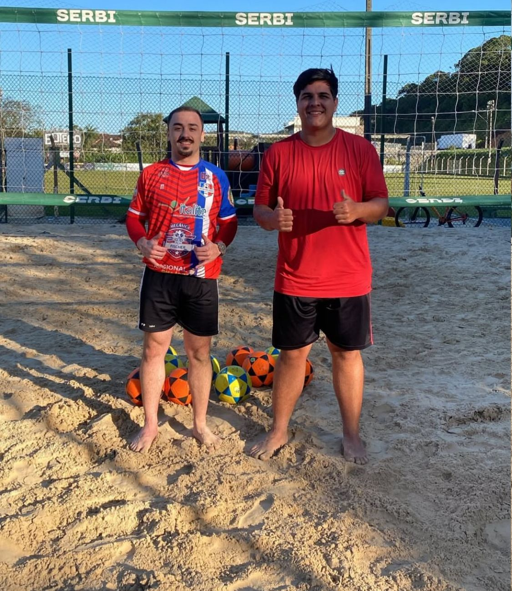
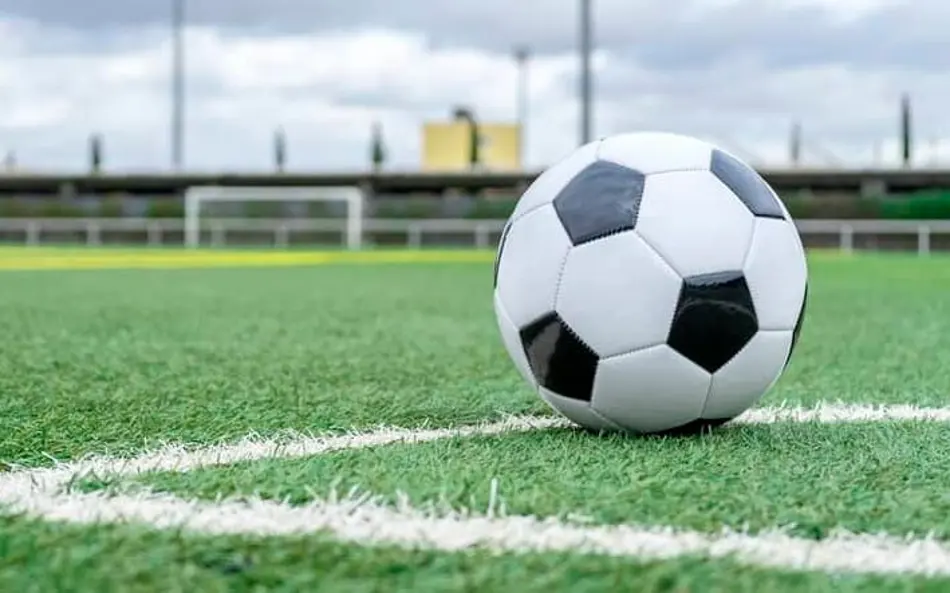
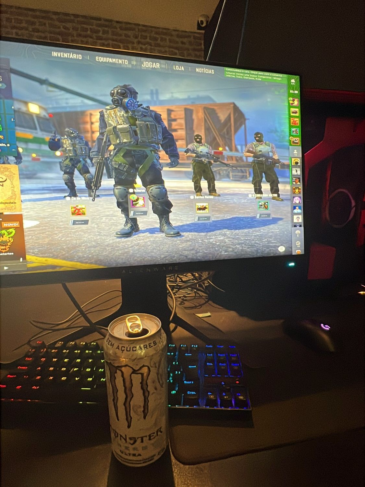
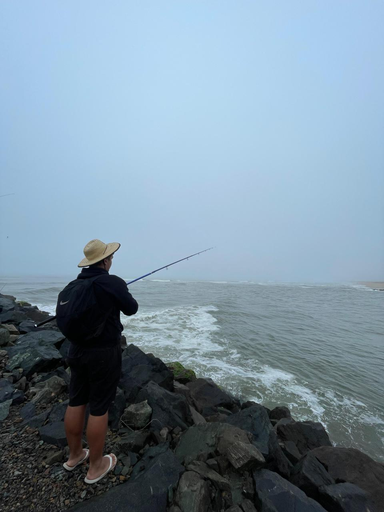

Futevolei

Comecei a jogar futevolei fazem 2 meses, um esporte que estou começando mas que me chamou muita atenção e me deu vontade de aprender e evoluir, com a inteção de melhorar meu fisico ao mesmo tempo me divertir.
Alguns esportes que eu pratico e algumas coisas que eu gosto de fazer no meu tempo livre!

Comecei a jogar futevolei fazem 2 meses, um esporte que estou começando mas que me chamou muita atenção e me deu vontade de aprender e evoluir, com a inteção de melhorar meu fisico ao mesmo tempo me divertir.

Jogo futebol desde criança, no começo como qualquer criança brasileira que joga e treina futebol meu sonho era virar jogador, infelizmente não aconteceu mas até nos dias de hoje eu jogo bola sempre foi uma paixão e eu nunca abandonei esse esporte mesmo que hoje eu so jogue como um hobbie

O que me fez me apaixonar por tecnologia foi os jogar, meu primeiro contato foi videogame eu comecei cedo com uns 4 anos, depos comecei a jogar jogos online por volta de uns 9 anos, meu primeiro jogo online foi DDTank, depois conheci varios jogos e alguns eu jogo até hoje como o CS.

Outro Hobbie que eu comecei esse ano foi pescar, sempre que tenho um sabado livre me programo com meus amigos do trabalho para irmos pescar, é algo divertido ao mesmo tempo te tira da frente do celular, das telas de computadores, otimo pra relaxar a mente e tirar umas boas risadas com os amigos, nem sempre é pelo peixe, se fosse somente pelo peixe eu comprava na peixaria kkkkkkk.